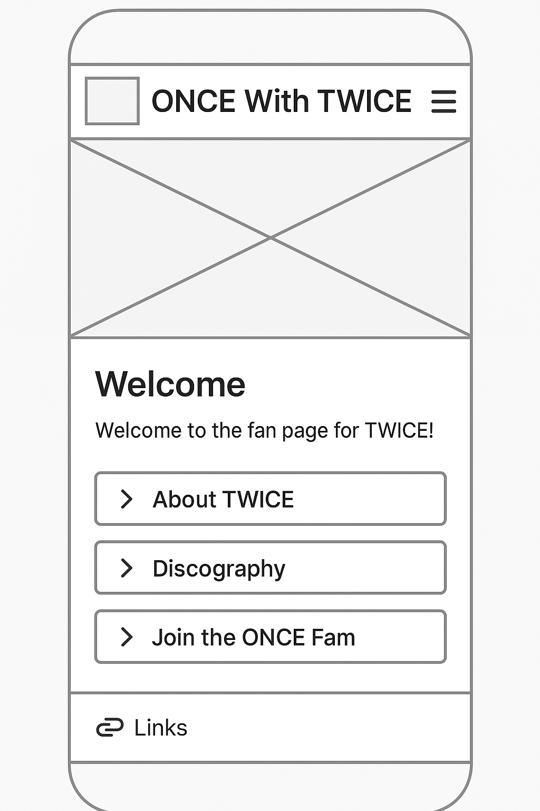
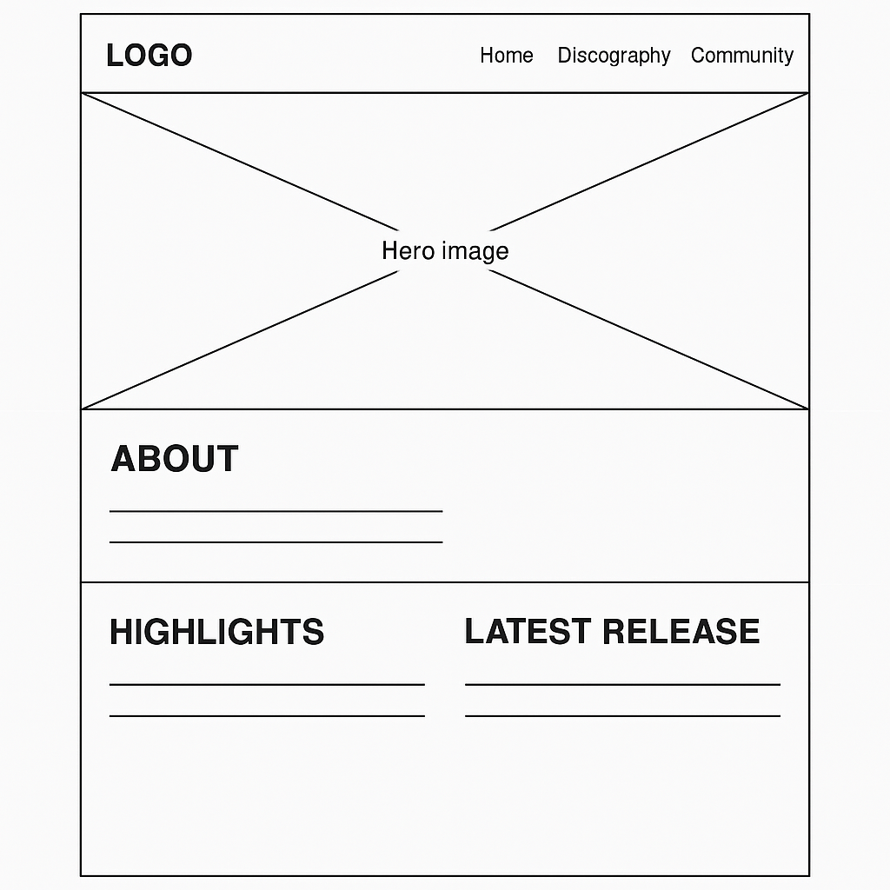

🌟 Site Plan: ONCE With TWICE
Site Name
ONCE With TWICE
This name reflects the strong connection between TWICE and their fanbase, ONCE. The site celebrates the group's journey and brings fans together to share news, music, and community experiences.
Optional domain availability: oncewithtwice.com
Site Purpose
The website is a fan-made hub for TWICE, providing a comprehensive overview of the group's discography, member profiles, news, and an interactive community space for fellow ONCEs to connect and join the fandom.
Scenarios
- Where can I find TWICE's full discography and recent album releases?
- How can I join the ONCE fan community and get updates about TWICE's upcoming activities?
Color Schema
- TWICE Pink (#ff5fa2): Used for headers, highlights, and call-to-action buttons.
- Royal Purple (#6a1b9a): Used for background accents, navigation, and footer styling.
The colors are inspired by TWICE’s signature aesthetic: vibrant, energetic, and full of charm.
Typography
- Arial: Used for body text to maintain clarity and legibility.
- Georgia: Used for headings to give a touch of elegance and contrast.
Wireframes
Mobile View (Home Page)

Desktop View (Home Page)
